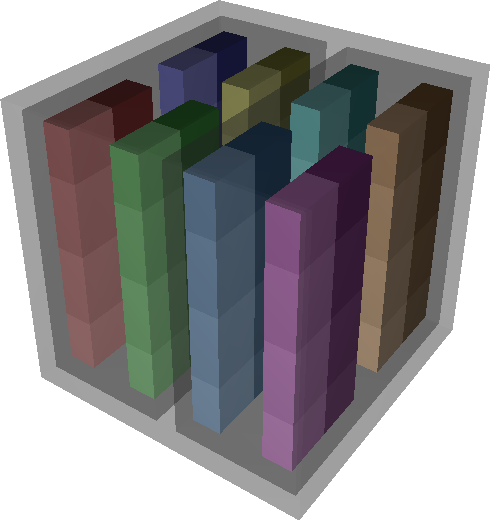
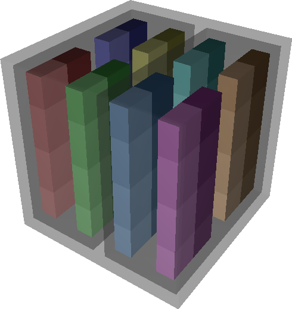
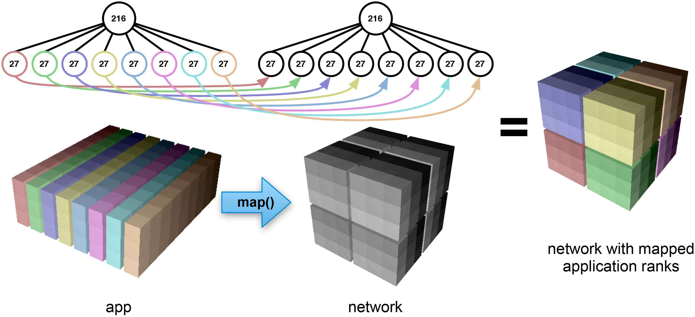
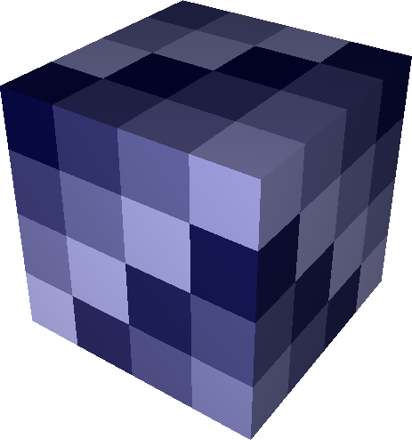
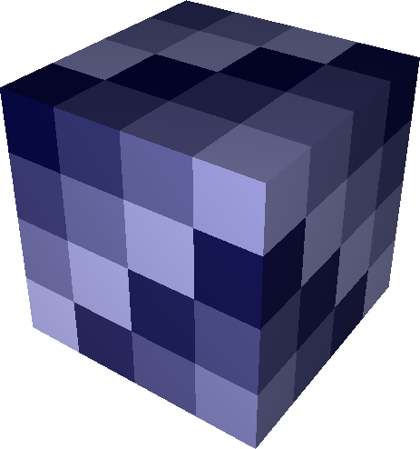

User Guide¶
Rubik is a tool that simplifies the process of creating task mappings for structured applications. Rubik allows an application developer to specify communicating groups of processes in a virtual application topology succinctly and map them onto groups of processors in a physical network topology. Both the application topology and the network topology must be Cartesian, but the dimensionality of either is arbitrary. This allows users to easily map low-dimensional structures such as planes to higher-dimensional structures like cubes to increase the number of links used for routing.
Rubik also provides embedding operations that adjust the way tasks are laid out within groups. These operations are intended to optimize particular types of communication among ranks in a group, either by shifting them to increase the number of available links for communication between processor pairs or by moving communicating ranks closer together on the Cartesian topology to reduce latency. In conjunction with Rubik’s mapping semantics, these operations allow users to create a wide variety of task layouts for structured codes by composing a few fundamental operations, which we describe in the following sections.
Partition Trees¶
The fundamental data structure in Rubik is the partition tree, a hierarchy of n-D Cartesian spaces. We use partition trees to specify groups of tasks (or processes) in the parallel application and groups of processors (or nodes) on the network. Nodes of a partition tree represent boxes, where a box is an n-D Cartesian space. Each element in a box is an object that could be a task or a processor. New boxes are filled by default with objects numbered by rank (much like MPI communicators).
Every partition tree starts with a single root box representing the full n-D Cartesian space to be partitioned. We construct a box from a list of its dimensions, e.g., a 4 x 4 x 4 3D application domain. From the root, the tree is subdivided into smaller child boxes representing communication groups (MPI sub-communicators) in the application. Child boxes in a partition tree are disjoint, and the union of any node’s child boxes is its own box. Unlike other tools, which are are restricted to two or three dimensions, Rubik’s syntax works for any number of dimensions. An arbitrary number of dimensions can be specified when a box is constructed.

 

The Rubik code below is used to construct a partition tree:
domain = box([4,4,4]) # a. Create a cube
domain.div([1,1,2]) # b. Divide into halves
for child in domain:
child.div([2,1,2]) # c. Divide each half into 4
On line 1, we construct a 4 x 4 x 4 domain using the box command. This creates a one-level tree with a single box of 64 tasks (figure on the right). In line 2, we use Rubik’s div command to split this tree along the third dimension into two boxes of 32 tasks, which fully cover the original box. Lines 3 and 4 loop over the newly created children and further split each child into 4 children of its own, with 8 tasks each.
The cubes in the figures on the right show the Cartesian structure of the tree. Leaf nodes are nested in transparent halos of their parent boxes. Each leaf box is given a unique color, and object numbering (MPI rank) within each leaf box is shown using a color gradient. The lowest rank within a leaf box has the lightest color. The tree diagrams below the cubes show the partition tree structure with boxes shown as nodes and labeled by the number of tasks they contain.
Partitioning Operations¶
The div operation used in the previous section is one of four operations in Rubik that divide a box into children: div, tile, mod and cut. Like the box constructor, these operations can be used on an arbitrary number of dimensions.

Div: div takes a set of divisors d_0, d_1, ... d_n as argument, one for each dimension of the box it divides. It slices the parent box into d_i groups along dimension $i$, creating prod_{i=0}^{n-1}{d_i} child boxes. The child boxes form a d_0 x d_1 x ... x d_n space where the task at position (x_0, x_1, ..., x_n) in the parent box is in the child box with index (frac{x_0}{d_0}, frac{x_1}{d_1}, ..., frac{x_n}{d_n}):
app = box([4,4,4])
app.div([2,1,4])
Tile: While div divides a space into a fixed number number of groups, tile divides a space into fixed-size child boxes, or $tiles$. The number of tiles created depends on the size of the box that tile is applied to. Arguments to tile are tile dimensions rather than divisors. Formally, tile on a D_0 x D_1 x ... x D_n space is equivalent to div with divisors frac{D_0}{d_0}, frac{D_1}{d_1}, ..., frac{D_n}{d_n}. The figure on the right shows the same boxes created using div and tile:
app = box([4,4,4])
app.tile([2,4,1])


Mod The mod operation shown on the right is similar to div in that it also takes a list of n divisors and creates prod_{i=0}^{n-1}{d_i} child boxes. However, mod‘s child boxes are interleaved, not contiguous. With mod, task (x_0, x_1, ..., x_n) will be a member of the child box ((x_0 bmod d_0), (x_1 bmod d_1), ..., (x_n bmod d_n)):
app = box([4,4,4])
app.mod([2,2,2])
Cut The cut operation shown on the right is a generalization of div and mod. cut takes the same set of divisors as div and mod, but it also takes a second list that specifies the manner of slicing in each dimension. In the picture, we can clearly see that cut creates contiguous slices along dimensions where div is specified, but along the third dimension which uses mod, the child boxes are interleaved:
app = box([4,4,4])
app.cut([2,2,2], [div,div,mod])
Mapping¶
Partition trees in Rubik are used not only to specify groups of tasks in a Cartesian application domain, but also to specify groups of processors on the physical network. The tool is designed to simplify the process of mapping tasks between spaces with potentially different dimensionality. A fundamental example is that of mapping planes to boxes. Scientific applications may perform collective operations within a plane in the application domain, but mapping a plane directly onto a 3D mesh network will not maximize the number of physical links available for communication within the plane. Mapping the plane’s tasks to a higher dimensional space allows more bandwidth to be exploited. Rubik makes this easy by facilitating mapping for arbitrary number of dimensions.
The figure below shows two boxes of 216 objects subdivided into eight 27-object groups. The first box’s children are planes, and the second box’s children are cubes. Regardless of the particular structure, the number of leaves in the two partition trees is the same and each is of the same size. Such trees are considered compatible. Two compatible trees can be mapped by performing a simple breadth-first traversal of their leaves and pairing off successive child boxes. The arrows in the figure show these pairings for the example. For each pair, we take the tasks in the child boxes in the application domain and copy them into the corresponding boxes in the network domain.
Rubik code:
# Create app partition tree of 27-task planes
app = box([9,3,8])
app.tile([9,3,1])
# Create network partition tree of 27-processor cubes
network = box([6,6,6])
network.tile([3,3,3])
network.map(app) # Map task planes into cubes
The Rubik map operation reduces the burden of mapping multi-dimensional spaces by allowing the user to think only in terms of group sizes. The particular shapes of groups are specified separately using the simple partitioning operations discussed above. All that is required for a map is tree compatibility.
Writing map files¶
Once Rubik has mapped a set of tasks to a network decomposition, it can write out map files suitable for use on a number of high performance computing systems using write_map_file.
Permuting operations¶

 

By default, the Rubik map operation copies ranks between Cartesian spaces in scan-line order, with the highest-indexed dimension varying fastest. While this is an intuitive default order, a user may want to permute ranks within groups to target bandwidth or latency optimizations. Rubik has several operations that allow tasks to be permuted to exploit properties of the physical network: tilt, zigzag, and zorder.
Tilt The tilt operation can increase the number of links available for messaging on n-D Cartesian networks. Conceptually, tilt(op1,op2,op3) selects one hyperplane (denoted by op1) and a direction (op2) along which an increasing number (op3) of shifts are applied normal to the direction of the hyperplane. Shifts are applied in a circular fashion to all parallel hyperplanes resulting in a permutation that “tilts” each hyperplane. The figures on the right show multiple, successive applications of the tilt operation to a 4 x 4 x 4 box. On the left is an untilted box, with tasks colored by identity (MPI rank) from lightest to darkest. In the center, we see the same tasks after permutation by one tilt, and on the right is the same box after two tilts have been applied:
Z, Y, X = 0, 1, 2 # Assign names to dimensions
net = box([4,4,4]) # Create a box
net.tilt(Z, X, 1) # Tilt Z (XY) planes along X
net.tilt(X, Y, 1) # Tilt X (YZ) planes along Y
tilt tries to increase the available links for communication between neighbor tasks. For example, by shifting hyperplanes normal to X, we add links in the X dimension that neighbors can use for communication. Successive tilts in additional dimensions add links in more dimensions. The higher the dimension of the network the more independent tilt‘s can be performed and the more links can be exploited.
Zigzag The zigzag operation is similar to the tilt operation in that it shifts hyperplanes along a dimension. However, rather than shifting each successive plane by an increasing amount, zigzag only shifts alternating segments by a constant amount. This targets bandwidth in effectively the same way that tilt does, by adding links along the permuted dimension. However, zigzag has better latency properties than tilt since tasks stay closer to their starting point after a zigzag than they would with tilt.
Zorder Z-ordering is a space-filling curve that maps a multi-dimensional space to a linear curve while partially preserving multi-dimensional locality. Space-filling curves have been used heavily in the mapping literature for latency optimizations. Rubik provides a zorder permutation operation for this purpose, as well. Like other operations in Rubik, our zorder operation can scale to an arbitrary number of dimensions. Rubik dynamically constructs the necessary bit filters to translate high-dimensional Z codes, and zorder can be called on any type of box.
Hierarchical permutation¶
Rubik permutations can be applied to boxes at any level of a partition tree. The figure on the right shows a 192-task partition tree, net. The tree has three 4 x 4 x 4 children. Here, we apply a different permutation (tilt, zorder, or zigzag) to each child. Accessing children is simple: Rubik’s partitioning operations define a d_0 x d_1 x ... x d_n subspace and each element can be accessed via the corresponding subscript into this space. In the example, one could call any of these operations on net, and they would apply to the entire box instead of a subgroup.

Rubik code:
Z, Y, X = 0, 1, 2
net = box([12,4,4])
net.div([3,1,1])
net[0,0,0].tilt(Z,X,1)
net[0,0,0].tilt(X,Y,1)
net[1,0,0].zorder()
net[2,0,0].zigzag(Z,X,1)
net[2,0,0].zigzag(X,Y,1)
Dimensionality-independent operations¶
As described above, all of Rubik’s operations are dimensionality-independent. They can apply to arbitrary number of dimensions, and the same operations that are used on a 3D BG/P or Cray XT torus could be used on a 5D BG/Q torus, or on a 6-dimensional tofu network of the K supercomputer. Each operation is designed so that it can be applied in a lower-dimensional space that is easy to visualize, then scaled up in a regular fashion to higher dimensional spaces. The visualization tool used to generate the figures in this paper takes the same Python scripts as input that are used to generate the mappings. Developers can view their mapping operations as they work, and this allows them to reason intuitively about the effects of Rubik mappings in higher dimensions.
Rubik does not discover optimal network mappings automatically, nor is it intended to do so. It allows developers to leverage a priori knowledge of the application and architecture and target latency and/or bandwidth optimizations as the case maybe. It also provides a framework within which application developers can make reasonable mapping choices to quickly and intuitively embed their applications in higher-dimensional Cartesian spaces.


{kind=link}
{kind=link}
{kind=link}